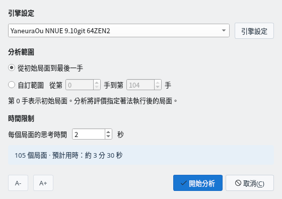
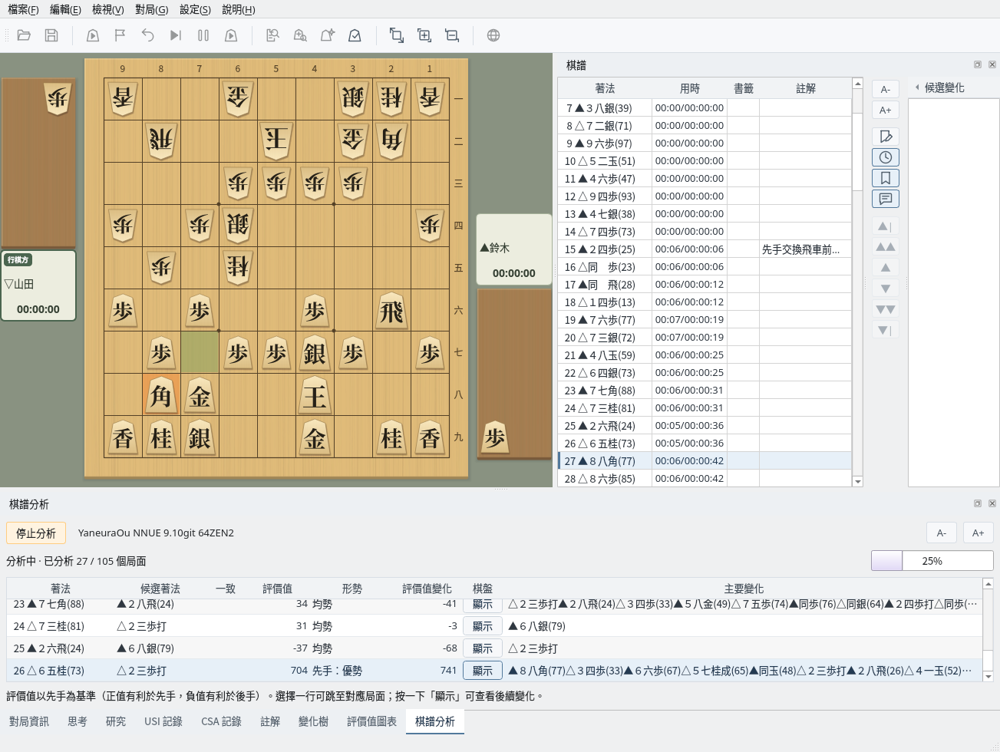
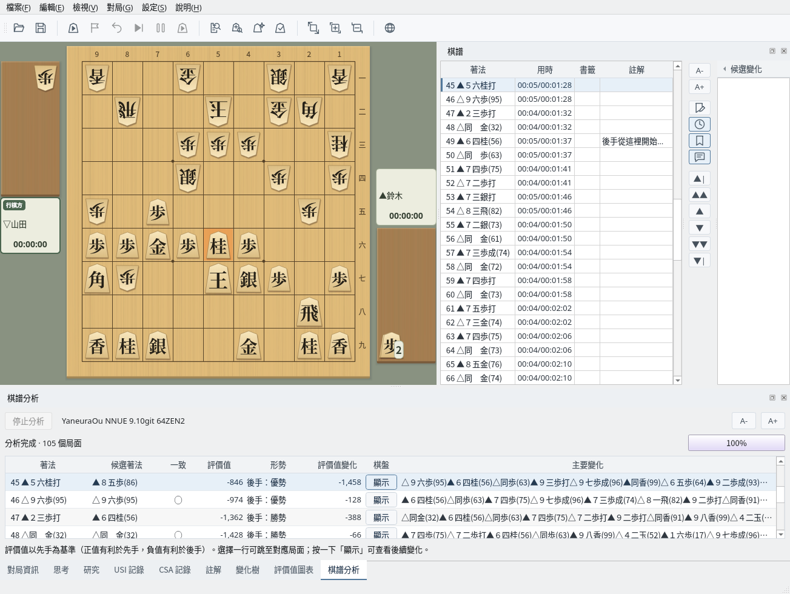
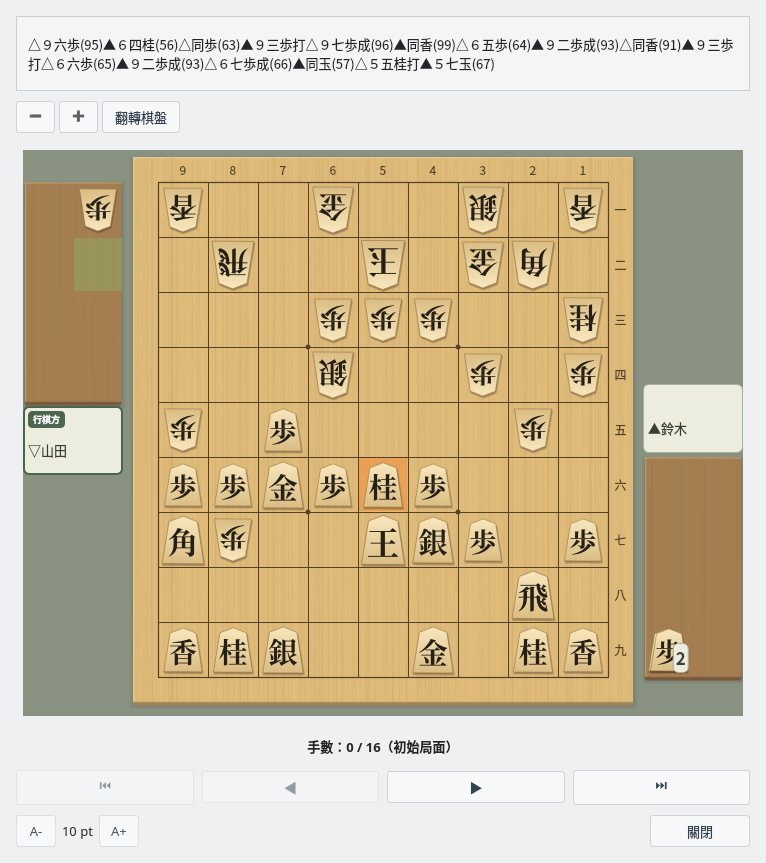
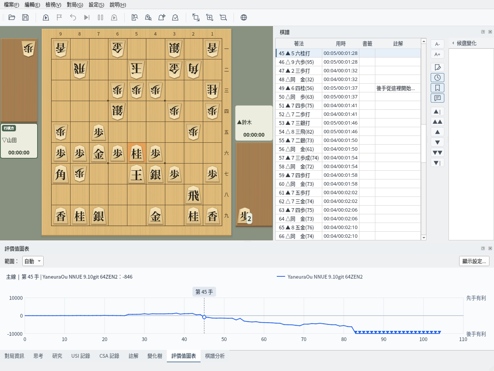

以 USI 引擎分析棋譜，掌握形勢的變化
截圖於 Linux 上以繁體中文介面擷取。
在「棋譜分析」對話方塊中設定分析條件
顯示要分析的棋譜。可以在對局結束後直接分析，也可以分析透過「檔案」→「開啟…」讀取的棋譜（棋譜管理）。顯示變化時，會分析正在顯示的變化。
選擇「對局」→「分析棋譜…」（也可以使用工具列按鈕）開啟「棋譜分析」對話方塊，設定以下項目。
對話方塊下方會顯示要分析的局面數與預計用時。按一下「開始分析」即開始分析。設定會在下次還原。認輸等終局列不會被分析。

「棋譜分析」對話方塊：設定引擎、分析範圍與思考時間
以列表檢視已分析局面的評價值、候選著法與主要變化
開始分析後，下方會開啟「棋譜分析」面板，每分析完一個局面就增加一列結果。棋盤與棋譜欄會移動到正在分析的局面，評價值圖表也會依序繪製。可以透過進度列與已分析的局面數了解進度。
要中途停止，請按一下「停止分析」（也可以選擇「對局」→「取消分析」）。已有的結果會保留。分析中無法操作棋譜欄與棋盤。

分析中：棋盤移動到正在分析的局面，結果逐列增加
分析結束後會顯示「分析完成」。各欄的內容如下。
| 欄 | 內容 |
|---|---|
| 著法 | 棋譜中的著法。分析走完這一手後的局面 |
| 候選著法 | 引擎在前一個局面認為最好的著法 |
| 一致 | 著法與候選著法相同時顯示 ◯ |
| 評價值 | 先手視角的評價值（＋為先手有利，−為後手有利）。將死顯示為「mate 手數」 |
| 形勢 | 根據評價值判定的形勢（參見下方的「形勢判斷的標準」） |
| 評價值變化 | 與前一個局面相比評價值的增減（先手視角） |
| 棋盤 | 按一下「顯示」在棋盤上檢視主要變化 |
| 主要變化 | 引擎預測的後續著法 |
選擇一列後，棋盤、棋譜欄與評價值圖表會移動到該局面。評價值變化較大的列就是形勢大幅變化的一手（本例中為第 45 手▲５六桂打）。結果會保留到開始下一次分析、讀取其他棋譜或開始新對局為止。

分析結果：選擇一列即可移動到該局面
按一下「棋盤」欄中的「顯示」（或按 Enter 鍵）會開啟「主要變化顯示」視窗，可以從該局面逐手重播主要變化，也可以「翻轉棋盤」或放大、縮小棋盤。

主要變化顯示：從分析的局面逐手重播主要變化
以圖表檢視形勢的變化
「評價值圖表」分頁以先手視角的折線顯示分析得到的評價值變化。上方為先手有利，下方為後手有利，將死的局面以標記顯示在圖表的上端或下端。按一下圖表即可移動到該手的局面。
範圍可以選擇「自動」或「固定」，並可透過「顯示設定…」變更刻度與字型大小。圖表圖片可以透過「檔案」→「儲存評價值圖表圖片…」儲存，或透過「編輯」→「複製評價值圖表圖片」複製。

評價值圖表：上方顯示所選著法及其評價值
根據評價值將形勢分為 5 個等級
| 評價值 | 形勢 | 顯示範例 |
|---|---|---|
| 0 ～ 100 | 均勢 | 均勢 |
| 101 ～ 300 | 稍有利 | 先手：稍有利 / 後手：稍有利 |
| 301 ～ 600 | 有利 | 先手：有利 / 後手：有利 |
| 601 ～ 1000 | 優勢 | 先手：優勢 / 後手：優勢 |
| 1001 以上 | 勝勢 | 先手：勝勢 / 後手：勝勢 |
| 將死 | 勝 | 先手勝 / 後手勝 |